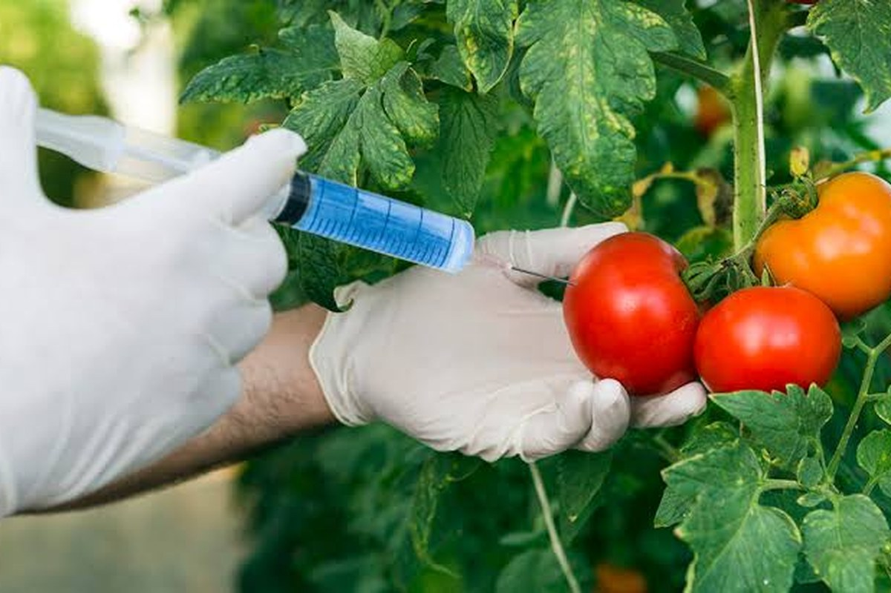

The Ethical Crossroads: Understanding GMOs' Role in Human Health and Society
A comprehensive overview of why GMO ethics matter, what scientific evidence reveals, and the critical questions we should be asking about genetic modification technology.
Explore our comprehensive research on the ethical implications of GMOs to human health and society
 Featured
Featured
A comprehensive overview of why GMO ethics matter, what scientific evidence reveals, and the critical questions we should be asking about genetic modification technology.

Learn the science behind genetic modification, how it differs from traditional breeding, and why understanding the technology is essential to informed decision-making.

What does scientific research actually show about GMO food safety? Review the evidence, ongoing research questions, and what major health organizations conclude.

Explore the documented advantages of GMO technology: higher crop yields, reduced pesticide use, improved farmer income, and potential health innovations like Golden Rice.
Navigate the complex ethical questions surrounding GMO technology: consumer choice, scientific responsibility, corporate power, fairness, access, and environmental stewardship.

Examine how GMO technology affects different communities: farmers' livelihoods, consumer access to food, food security globally, and socioeconomic equity in agriculture.
Look ahead to emerging GMO technologies, the governance challenges they present, and how society can balance innovation with responsibility, transparency, and democratic participation.
After exploring these articles, take our interactive quiz to see how well you understand GMOs, their impacts, and the ethical questions they raise.
Take the Quiz